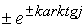

|
В. И. ЕЛИСЕЕВ ВВЕДЕНИЕ В МЕТОДЫ ТЕОРИИ
ФУНКЦИЙ ПРОСТРАНСТВЕННОГО КОМПЛЕКСНОГО ПЕРЕМЕННОГО |
|
Продолжение 2 из 2.
8.2. Квантовые числа кварков есть следствие многосвязности пространства.
Дальнейшее увеличение связности лептонного пространства может идти за счет роста количества скомпенсированных туннелей. Тау–нейтрино
и тау-антинейтрино  отличаются от мюонного нейтрино дополнительным скомпенсированным-туннелем. Появление дополнительного скомпенсированного туннеля закодировано как заряд С и так далее B, t.
отличаются от мюонного нейтрино дополнительным скомпенсированным-туннелем. Появление дополнительного скомпенсированного туннеля закодировано как заряд С и так далее B, t.
Модели этих частиц в представлении многосвязности имеют вид, представленный на рис 79, 80.
Рис. 79 Модель тау-нейтрино имеет два скомпенсированных лептонных туннеля с весовыми коэффициентами
Рис. 80. Модель тау-нейтрино имеет два скомпенсированных лептонных туннеля с весовым коэффициентом
Электронно-лептонный уровень.
Разработанные модели открывают возможность для расчета вариантов дальнейшего роста многосвязности. В этих вариантах могут учитываться скомпенсированные тау-лептонные туннели (двойные лептонные туннели) и так далее. Математически нейтринный уровень бесконечен по образованию все более тяжелых нейтринных частиц. Нейтринный уровень заполняет пространство изолированного электрического туннеля
, образованного в комплексном пространстве более высокой размерности. Эксперименты установили три вида нейтрино: электронное, мюонное, тау-нейтрино. При определенных энергетических условиях возможно заполнения нейтринного пространства различными комбинациями, например, а также одновременно комбинациями из этих комбинаций, например , скомпенсированных антинейтринными комбинациями. При такой комбинации микрочастица будет иметь одновременно комбинацию из зарядов . Частицы с такими комбинациями зарядов, возможно, будут в дальнейшем обнаружены.
Электрический уровень структурируется, образуя лептонные частицы. Структуризация идет по тем же схемам, что и на нейтринном уровне. Комбинация электрического и лептонного зарядов дают электрический – лептонный заряд. Модель электронно-лептонного заряда представлена на рис 81. На рис 81 электрический заряд может иметь лептонный заряд электронного нейтрино и антинейтрино ,а также все виды лептонных образований.
Рис. 81. Простейшая структура электрически лептонного уровня.. Электрическому заряду соответствует изолированное зарядовое образованное в более высокой пространственной размерности по сравнению с тем пространством, к которому принадлежит лептонный туннель.
Вопрос о нахождении зарядовых сопряжений, приводящих к их самокомпенсации, необходимо решать с применением кварковой систематизации, так как неизвестны те условия, при которых электронный заряд переходит в лептонный и наоборот. Из предыдущей схемы построения моделей можно установить две комбинации, приводящие к образованию нейтральной частицы. В соответствии с каналами распада такой нейтральной частицей следует считать нейтральный  -мезон. Нейтральный мезон распадается по схеме . Поэтому принимаем следующею схему скомпенсированных лептонно - электрических туннелей. .
-мезон. Нейтральный мезон распадается по схеме . Поэтому принимаем следующею схему скомпенсированных лептонно - электрических туннелей. .
Один электрический туннель скомпенсирован как по электрическому заряду, так и лептонному электронным нейтрино, второй мюонным нейтрино. Равновероятная комбинация кварковой структуры нейтрального пи-мезона позволяет выразить электрический заряд кварков и антикварков
через комбинации электронно-лептонного заряда.Нейтральный пион составлен из суммы четырех простейших зарядовых сопряжений. В пределах этой суммы составлены комбинации зарядовых сопряжений кварков и антикварков, так что зарядовое сопряжение нейтрального пиона соблюдается в комбинациях
. Это условие соответствует кварковой комбинации в современной классификации микрочастиц.Нейтральный пион можно составить и из зарядовых сопряжений с участием тау-нейтрино типа
и так далее. На логику расчета это не повлияет.Зарядовые сопряжения для нейтрино, антинейтрино, электрического туннеля в соответствии с моделями, разобранными выше эквивалентны следующим выражениям
|
(8.2.1.) |
Зарядовые сопряжения равны
|
(8.2.2.) |
Так что, суммируя все строчки (8,2,2) получим в итоге зарядовое сопряжение нейтрального пиона в виде
С изолированным направлением
связываем гравитационный заряд. Нейтральный пион составленный из суммы электрических и лептонных зарядовых сопряжений нейтрален. Структура нейтрального пиона имеет гравитационный туннель .Из четырех зарядовых сопряжений нейтрального пиона можно составить еще две комбинации
|
(8.2.3.) |
Первое зарядовое сопряжение есть гамма квант. При переходе к пространственным направлениям получим комплекс
Второе обозначим как фотон
Сумма гамма кванта и фотона дает зарядовое сопряжение нейтрального пиона
Гравитационно изолированное направление алгебраически обладает всеми свойствами изолированного электрического и лептонного направления. Это направление может быть скомпенсировано (например до весового коэффициента равного 4 как в пионе), а также сопрягаться с другими направлениями.
Современная теория микрочастиц дает следующий кварковый состав известных стабильных частиц. Протон состоит из двух
u и одного d-кварка (u+u+d), нейтрон – из одного u и двух d-кварков (u+d+d),
Определитель системы равен 0. Это означает, что возможно бесконечное множество комбинаций соотношений между неизвестными, которые попарно дадут один и тот же результат. Решение имеет вид
Рис 82 Структура нейтрального пи-мезона.
Таким образом, получены значения электрического заряда каждого кварка в точном соответствии с теорией.
Модель
Если обозначить
, то будем иметь системуКоэффициент К может принимать любые значения, оставляя без изменения численную величину электрического заряда кварка.
|
K=2 |
K=0 |
k=1/3 |
|
0 |
1/3 |
|
|
2/3 |
1/3 |
|
|
|
-1 |
-2/3 |
|
C=-1/9 |
1/3 |
0 |
Таким образом, в пределах одного электрического заряда кварка возможно бесконечное множество вариантов сопряжения электронно–лептонных зарядов. Таблица вариантов может быть продолжена до бесконечности. Внутри кварковой структуры возможно бесконечное распределения зарядов по численной величине, которые оставляют без изменения его дробный электрический заряд. В результате приходим ко второму признаку классификации кварков – цвету. Считается, что кварки имеют три различных цвета:
r (red), y (yellow),v (violet).Каждый кварк одного “аромата” т.е. с одинаковой массой и квантовыми числами имеют различные квантовые числа - “цвета’. Мезоны имеют симметричную комбинацию цветов
так. Чтобы не нарушался принцип Паули (принцип Паули в конечном счете отвечает за рост много связности пространства и возник из – за непонимания этого момента).
Таким образом, коэффициент К отвечает за второй признак кварка – “цвет”. Из множества коэффициентов
Барионный заряд кварка рассчитывается аналогично электрическому заряду. Составим аналогичную систему для барионного заряда.
Вычитая из первого уравнения второе, получим
. Подставляя это равенство в третье уравнение имеем . Четвертое уравнение дает . Подставляя эти суммы в первое и второе уравнение будем иметь . .Переходя к электронно - лептонному составу кварков, будем иметь следующую таблицу.

Таким образом, барионный заряд кварков также дробный. Коэффициенты
, входящие в систему барионного заряда кварка также варьируются в зависимости от коэффициента К, определяющего “цвет “ кваркаМини оглавление:
[0], [1.1.1, 1.1.2, 1.1.3, 1.1.4, 1.1.5, 1.1.6, 1.1.7, 1.1.8, 1.2, 1.2.1, 1.2.2, 1.2.2.a, 1.2.2.b, 1.2.2.c, 1.2.2.d, 1.2.2.e, 1.2.2.f, 1.2.2.g, 1.2.2.h, 1.2.3, 1.3.1, 1.3.2, 1.3.3, 1.3.4, 1.3.5, 1.3.6, 1.4.1, 1.4.2, 1.5, 1.6, 1.7.1, 1.7.2, 1.7.3.1, 1.7.3.2, 1.7.3.3, 1.7.4.1, 1.7.4.2, 1.8.1], [2.1, 2.2],[3.1, 3.2, 3.3, 3.4.1, 3.4.2, 3.4.3, 3.4.4, 3.4.5],[4.1, 4.2, 4.3, 4.4],[5.1, 5.1.Рис.52, 5.2, 5.3, 5.4, 5.4.Т1, 5.4.Т2, 5.4.Т3, 5.5.1, 5.5.2, 5.5.3, 5.5.4],[6.1.1, 6.1.2, 6.2.1, 6.2.2, 6.2.3, 6.2.4, 6.2.5, 6.3, 6.4.1, 6.4.2, 6.5.1, 6.5.2],[7.1, 7.2, 7.3, 7.4, 7.5, 7.6, 7.7.1, 7.7.2, 7.8.1, 7.8.2, 7.8.3, 7.9],[8.1, 8.2.1, 8.2.2, 8.3, 8.4, 8.5, 8.6, 8.6.T1, 8.7, 8.8.1, 8.8.2, 8.8.3, 8.9.1, 8.9.2, 8.9.3, 8.10, 8.10.T2, 8.10.T3],[9.1, 9.2, 9.3, Рис.88, 89, 90, 91, 92, 93, 94, 95, 96, 97, 98, 99, 100],[10.1, 10.2, 10.3, 10.4, 10.5, 10.6, 10.7, 10.8, 10.9, 10.10, 10.11, 10.12, 10.13, 10.14, 10.15.1, 10.15.2, 10.16.1, 10.16.2, 10.17, 10.18],[11]
Размещенный материал является электронной версией книги: © В.И.Елисеев, "Введение в методы теории функций пространственного комплексного переменного", изданной Центром научно-технического творчества молодежи Алгоритм. - М.:, НИАТ. - 1990. Шифр Д7-90/83308. в каталоге Государственной публичной научно-технической библиотеки. Сайт действует с 10 августа 1998.
E-mail: mathsru@gmail.com